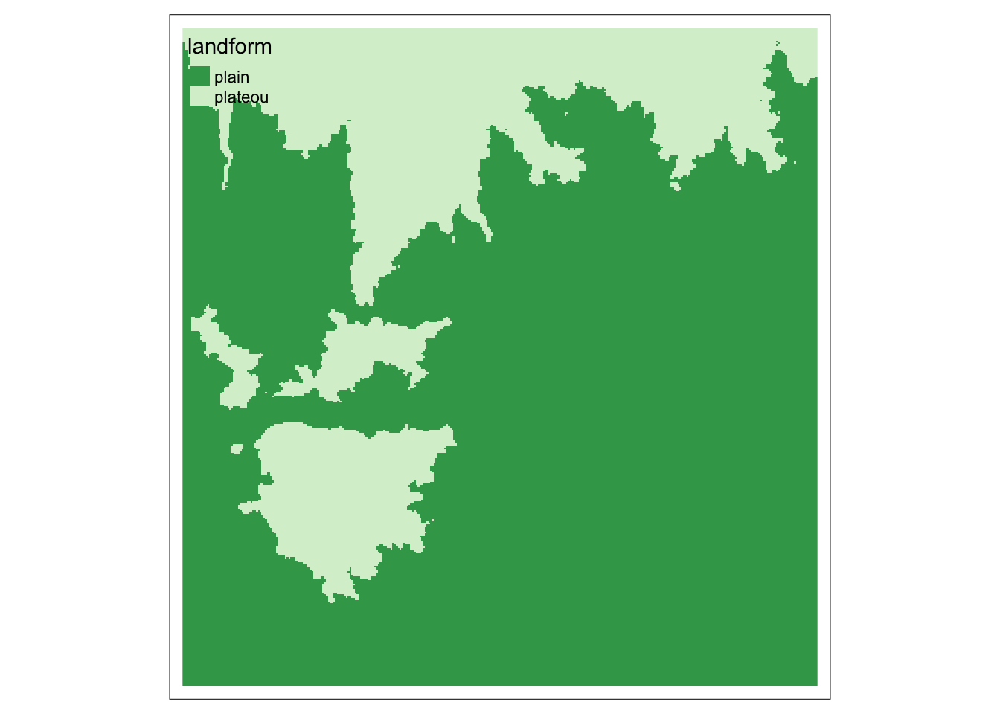

# install.packages("RStoolbox)
# load packages
library(terra) # raster
library(sf) # vector
library(dplyr) # data manipulation
library(tmap) # mapping
library(RStoolbox) # remote sensing toolsArchaeological Spatial Analysis in R
Lesson 2
Learning Objectives
learn about raster classes in R
deal with coordinate reference system
create raster data
manipulate raster data
Introduction
Raster data hold information within a cell. The information can be numeric or categorical. We can combine into one raster object multiple layers to hold multiple levels of information. For example, each layer representing different time of the same area. If the layers contains spectral information they are called bands. Each bands represent a different wavelength range of electromagnetic spectrum.
Terrain Characteristics are calculated from digital elevation model and may include slope, aspect, topographic position index or landforms. We are interested inTopographic Position Index (TPI). TPI is a difference between the elevation of a cell and the mean height of surrounding cells. values above 0 indicates locations higher than average. values around 0 indicates flat locations. values below 0 indicates locations lower than average.
NDVI Different objects return different amount of energy in different wavelenghts of the electromagnetic spectrum. Normalized Difference Vegetation Index describes density and health of vegetation. It is a ratio between Red and Near Infrared reluctance. The values range between -1 and 1, where water having negative values, bare soil close to 0 dry vegetation low values and health vegetation high values approaching 1.
Background Reading
- Lovelace R, Nowosad K, Muenchow J, Geocomputation with R, Chapter 2.3,3.3, 4.3 , 5.3 and 10 - link
Packages
Raster Basic
Matrix
# create matrix - two dimensional data structure
m = matrix(1:9, nrow = 3, ncol = 3)
# check for attributes
attributes(m)$dim
[1] 3 3# check for dimension
dim(m)[1] 3 3Raster from scratch
# create spatial raster
r <- rast(ncol=3, nrow=3, xmin=-150, xmax=-120, ymin=20, ymax=50, vals = 1:9)
# plot
plot(r)
Reading raster file
dem = rast("../data/rast/dem.tif")
plot(dem)Summarizing Raster
class(dem) # class[1] "SpatRaster"
attr(,"package")
[1] "terra"summary(dem) #descriptive statistics dem
Min. :307.2
1st Qu.:361.9
Median :383.3
Mean :381.1
3rd Qu.:401.0
Max. :489.9 global(dem, fun = "mean") # custom e.g. mean, sd mean
dem 381.1442dim(dem) # dimensions[1] 367 354 1ncell(dem) # number of cells[1] 129918nrow(dem) # number of rows[1] 367ncol(dem) # number of columns[1] 354ext(dem) # spatial extensionSpatExtent : 627832.1451, 657452.9781, 4052886.4442, 4083595.0478 (xmin, xmax, ymin, ymax)res(dem) # raster resolution[1] 83.67467 83.67467crs(dem) # raster coordinate system[1] "PROJCRS[\"WGS 84 / UTM zone 37N\",\n BASEGEOGCRS[\"WGS 84\",\n DATUM[\"World Geodetic System 1984\",\n ELLIPSOID[\"WGS 84\",6378137,298.257223563,\n LENGTHUNIT[\"metre\",1]]],\n PRIMEM[\"Greenwich\",0,\n ANGLEUNIT[\"degree\",0.0174532925199433]],\n ID[\"EPSG\",4326]],\n CONVERSION[\"UTM zone 37N\",\n METHOD[\"Transverse Mercator\",\n ID[\"EPSG\",9807]],\n PARAMETER[\"Latitude of natural origin\",0,\n ANGLEUNIT[\"degree\",0.0174532925199433],\n ID[\"EPSG\",8801]],\n PARAMETER[\"Longitude of natural origin\",39,\n ANGLEUNIT[\"degree\",0.0174532925199433],\n ID[\"EPSG\",8802]],\n PARAMETER[\"Scale factor at natural origin\",0.9996,\n SCALEUNIT[\"unity\",1],\n ID[\"EPSG\",8805]],\n PARAMETER[\"False easting\",500000,\n LENGTHUNIT[\"metre\",1],\n ID[\"EPSG\",8806]],\n PARAMETER[\"False northing\",0,\n LENGTHUNIT[\"metre\",1],\n ID[\"EPSG\",8807]]],\n CS[Cartesian,2],\n AXIS[\"(E)\",east,\n ORDER[1],\n LENGTHUNIT[\"metre\",1]],\n AXIS[\"(N)\",north,\n ORDER[2],\n LENGTHUNIT[\"metre\",1]],\n USAGE[\n SCOPE[\"Engineering survey, topographic mapping.\"],\n AREA[\"Between 36°E and 42°E, northern hemisphere between equator and 84°N, onshore and offshore. Djibouti. Egypt. Eritrea. Ethiopia. Georgia. Iraq. Jordan. Kenya. Lebanon. Russian Federation. Saudi Arabia. Somalia. Sudan. Syria. Turkey. Ukraine.\"],\n BBOX[0,36,84,42]],\n ID[\"EPSG\",32637]]"histogram
hist(dem) # histogramReprojecting
It is important to get your data in the right coordinate system. In terra package you can a
crs()- get or set a coordinate reference systemproject() -change the coordinate reference system
# get the current crs of your data
crs(dem, describe = TRUE) name authority code
1 WGS 84 / UTM zone 37N EPSG 32637
area
1 Between 36°E and 42°E, northern hemisphere between equator and 84°N, onshore and offshore. Djibouti. Egypt. Eritrea. Ethiopia. Georgia. Iraq. Jordan. Kenya. Lebanon. Russian Federation. Saudi Arabia. Somalia. Sudan. Syria. Turkey. Ukraine
extent
1 36, 42, 84, 0# change the coordinate system
dem_WGS84 = project(dem, "EPSG:4326" )Map Algebra
local - operations on one cell at time
focal - operation on a neighborhood around cell
zonal - operations within specified zone
global - operations applied to all cells in a raster
Local
# multiply cells values
plot(dem * 100)# subsetting raster cells
plot(dem >= 400)It is possible to change the values of raster by reclassifying them using classify() function.The first step is to create a plain matrix where the first and second columns list the starting and ending values of the range of input values that are to be reclassified, and where the third column lists the new raster cell values.
m <- c(300, 400, 1, 400 , 500, 2)
m <- matrix(m, ncol=3, byrow = T)
m [,1] [,2] [,3]
[1,] 300 400 1
[2,] 400 500 2Paramaterright = TRUE, the intervals are closed on the right (and open on the left), (300, 400], closed means that second column of the matrix is inclusive.
# classify raster using matrix table m
dem_reclass = classify(dem, m, right = TRUE )
# plot
tm_shape(dem_reclass) +
tm_raster(style = "cat")Raster Attribute Table
# create raster attribute table
levels(dem_reclass) = data.frame(value = c(1, 2),
landform = c("plain", "plateou"))
# return the thebale for categorical raster
cats(dem_reclass)[[1]]
value landform
1 1 plain
2 2 plateou# map
tm_shape(dem_reclass) +
tm_raster(palette = "-Greens")
Focal
# function focal
dem_focal <- focal(dem, w=matrix(1,nrow=7,ncol=7), fun=mean)
#plot
tm_shape(dem_focal) +
tm_raster()A smoothed DEM can be used to extract contours. Function as.contour comes from terra package and returns object of class SpatVector that needs to be converted to sf class using st_as_sf().
# compute contours
contours <- as.contour(dem_focal) %>% st_as_sf()
# plot contours
tm_shape(dem_focal) +
tm_raster() +
tm_shape(contours) +
tm_lines() +
tm_text("level", size = 0.6, along.lines = TRUE, overwrite.lines = TRUE)Zonal
# categorical raster
geology = st_read("../data/vect/data.gpkg", layer = "geology")Reading layer `geology' from data source
`/Users/michalmichalski/Documents/asar/data/vect/data.gpkg'
using driver `GPKG'
Simple feature collection with 7 features and 1 field
Geometry type: MULTIPOLYGON
Dimension: XY
Bounding box: xmin: 627879.7 ymin: 4052897 xmax: 657512 ymax: 4083580
Projected CRS: WGS 84 / UTM zone 37N# rasterize vector
# rasterize is a terra function that accepts SpatVector and SpatRaster
# function vect() converts sf into SpatVect
geology.ras = rasterize(vect(geology), dem, "SEDIMENTS")
# plot
map1 = tm_shape(dem) +
tm_raster(palette = "Greens")
map2 = tm_shape(geology.ras) +
tm_raster()
tmap_arrange(map1, map2)# zonal statistics
zonal(dem,geology.ras, fun = "max") SEDIMENTS dem
1 Basalts 489.8946
2 Clays, Sands, Gravels 444.6641
3 Gypsum, Limestone, Marls, Clays, Sandstone, Rock Salt 430.1495
4 Limestone Conglomerates, Sandstones, Gypsum, Clays, Rock Salt 430.4252Global
Distance is one of the global operations. The function distance() compute distance for all cells in the raster to a target feature.
# read rivers as sf object
rivers = st_read("../data/vect/data.gpkg", layer = "rimes_rivers", quiet = TRUE)
# convert in SpatVector
rivers.vect = vect(rivers)
# compute distance raster
dist.rast = distance(dem,rivers.vect)
|---------|---------|---------|---------|
=========================================
?distanceHelp on topic 'distance' was found in the following packages:
Package Library
raster /Library/Frameworks/R.framework/Versions/4.1/Resources/library
terra /Library/Frameworks/R.framework/Versions/4.1/Resources/library
Using the first match ...# plot
tm_shape(dist.rast) +
tm_raster(style = "cont") +
tm_shape(rivers) +
tm_lines(col = "#80c5de")Terrain Characteristics
# calculate terrain characteristics - creates multiple layers
terrain_char <- terra::terrain(dem, c('slope', 'aspect', 'TPI', 'TRI'))
# a multi-layer raster
terrain_charclass : SpatRaster
dimensions : 367, 354, 4 (nrow, ncol, nlyr)
resolution : 83.67467, 83.67467 (x, y)
extent : 627832.1, 657453, 4052886, 4083595 (xmin, xmax, ymin, ymax)
coord. ref. : WGS 84 / UTM zone 37N (EPSG:32637)
source(s) : memory
names : slope, aspect, TPI, TRI
min values : 0.0001075726, 6.183411e-03, -4.362335, 0.00302124
max values : 8.3759761176, 3.599934e+02, 5.146751, 9.35797119 # axtract tpi layer into
tpi.rast = terrain_char$TPISpectral Indices
Read in Landsat data
# landsat bands
# Red
red <- rast("../data/rast/landsat_tbs/band_4.tif")
# Near Infrared (NIR)
near.infrared <- rast("../data/rast/landsat_tbs/band_5.tif")Calculate Spectral Indices
Raster Maths
# Normalized Difference Vegetation Index (NDVI)
# NDVI = (infrared - red) / (infrared + red)
ndvi = (near.infrared - red) / (near.infrared + red)
plot(ndvi)RStoolbox is a R package dedicated to remote sensing analysis. It provides a function spectralIndices() to compute a variety of spectral indices. The function returns a RasterBrick (old implementation of multi layered raster class) that we can convert to terra SpatRaster.
# stack
landsat = c(red,near.infrared)
#compute indices: N
# NDVI - Normalised Difference Vegetation Index
# MSAVI - Modified Soil Adjusted Vegetation Index
indices = spectralIndices(landsat, red = "band_4", nir = "band_5", indices = c("NDVI","MSAVI"))
# indices are returned in "old" raster format - convert to SpatRaster
indices = rast(indices)
#plot
plot(indices)GIS Bridge
R allows for interaction with GIS software installed on your computer.
It has benefit of processing large datasets using algorithms that are not implemented in R and building integrated data processing workflows.
The book Gecomputation in R dedicates entire Chater 10 to bridging R and GIS software such as QGIS, GRASS and GIS.
Here we are going to work with a different suite of tools called Whitebox Tools that can be integrated within R using a frontend package whitebox.
# 1: install r package
# install.packages("whitebox")
# 2: install whitebox tools
# whitebox::install_whitebox()
# 3: call in the whitebox R package
library(whitebox)
# check geomorphons
?wbt_geomorphons
# run geomorphons land classifications
whitebox::wbt_geomorphons(
dem = "../data/rast/dem.tif",
output = "../data/rast/geomorphons.tif"
)Map
# read raster file
geom.raster = rast("../data/rast/geomorphons.tif")
# plot
tm_shape(geom.raster) +
tm_raster(style = "cat")Writing Raster
The writeRaster() function saves SpatRaster objects to files on disk.
# distance
terra::writeRaster(dist.rast, "../data/rast/dist.rast.tif", overwrite=TRUE)
# tpi
terra::writeRaster(tpi.rast, "../data/rast/tpi.rast.tif", overwrite=TRUE)
# ndvi
terra::writeRaster(ndvi, "../data/rast/ndvi.tif", overwrite=TRUE)